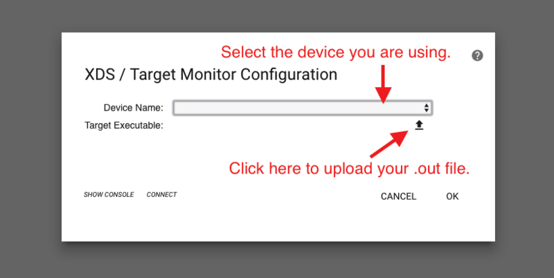
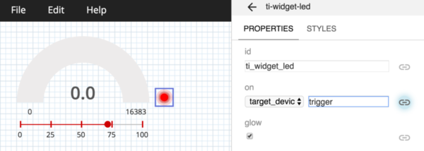

Introduction
This workshop is a continuation of the TI Drivers Project Zero exercise. We will expand on that example by creating a simple PC-side graphical user interface (GUI) that complements our example. If you remember, we created a simple application that continually reads an ADC channel & toggles an LED on or off depending on whether or not our ADC reading exceeds a threshold.
To do this, we will use a nifty tool called GUI Composer. GUI Composer is a browser-based utility for creating PC-side graphical interfaces for interacting with your hardware. GUI Composer supports several interfaces today, including Serial/UART, JTAG/XDS, or MQTT (for IoT applications).
For this demo, we will use the JTAG/XDS interface. We will visualize our latest ADC readings in an analog gauge & will add a horizontal slider for setting dynamically setting the threshold that triggers the LED to turn on/off.
Here's what we'll learn:
- Get introduced to TI's GUI Composer
- Create a simple analog gauge for visualizing ADC values
- Create a horizontal slider so threshold can be dynamically set
- Add an "LED" indicator to the GUI that mirrors the physical LED on our LaunchPad kit
Preview of the GUI we're making:
What is GUI Composer
GUI Composer is a browser-based "What you see is what you get" (WYSIWYG) tool for developing PC-side HTML-based graphical user interfaces (GUIs) that can complement your embedded project/application. With this tool, users will be able to drag & drop various GUI elements into a sandbox to build their interface, including gauges, dials, sliders, line charts & more.
Features:
- Allows you to build HTML-based GUIs graphically (simple drag & drop interface)
- Supports communication with the target device via USB (serial I/O), XDS Debug Port or Internet (MQTT / IoT)
- Wide variety of components to choose from, including graphs, gauges, dials, buttons, menus, meters, and many more
- Components configured via easy-to-use properties
- Full JavaScript editor provided for advanced users.
What interfaces does GUI Composer support?
GUI Composer supports various data transport interfaces. The following are supported:
- Serial/UART
- JTAG/XDS Debug interface (This is the interface we will use for this training)
- MQTT (Internet of Things)
Prerequisites
Recommended material
- TI Drivers Project Zero
- In this exercise, we will modify the output of that previous lab to leverage GUI Composer.
Software for desktop development
- This tutorial can be done 100% with a web browser in the cloud. We will use CCS Cloud to make small modifications to an existing example & will use GUI Composer to build a simple graphical interface.
- However, the exercises can also be completed using desktop/offline tools as well. If you want to run the exercises offline, you will need to download & install the following:
- CCS 7.0+
- SimpleLink SDK for your given LaunchPad
Hardware requirements
- A SimpleLink MCU LaunchPad Development Kit
Recommended Reading
- GUI Composer User's Guide: https://dev.ti.com/gc/designer/help/UsersGuide/index.html
Task 1 - Setting up code example for GUI Composer
1. Using a JTAG/XDS Debug interface to exchange data with your GUI
When using the JTAG/XDS Debug interface, GUI Composer can use your firmware's symbolic information to bind widgets. This essentially allows you to bind your application's global variables to GUI Composer widgets. In this training, we'll learn how to upload your project's .out file into GUI Composer, where it will parse the symbols within your application. We will then be able to bind our application's variables to various GUI elements. This mode requires the device to support non-intrusive memory access. There is no overhead on application processing and there is no code that needs to be added to your application. This option is available on all SimpleLink MCUs.
GUI Composer uses bindings to the ti-program-model component to allow widgets to be automatically updated to reflect the value of target-side global variables when those variables change, and to update the target-side global variable when the widget is configured by the user. For example, you can bind ADC readings to an analog gauge widget, or bind a variable within your application that is altered by a GUI Composer slider.
2. Let's turn the variables we want to visualize & modify into global variables
In this exercise, we want to build a simple GUI that does the following things:
- Visualize our latest ADC readings using an analog gauge
- Get an "LED" notification when we are above/below a threshold
- Feature a slider that allows us to modify the threshold for the LED alert
This means we need a global variable for our ADC reading & a global variable for our threshold. We will also need a global variable that tells us if we're above or below the threshold. To do this, we need to make a few modifications to the example project we created in the TI Drivers Project Zero lab.
Make adcValue a global variable
First, let's make adcValue a global variable. We need to get rid of the local declaration we have in our while(1) loop, then add a global declaration to the top of our code. We will eventually bind this global variable to an analog gauge in the GUI to visualize our latest readings.
Create a global variable for threshold
Second, we need to make our threshold to be determined by a variable. Currently, our threshold is hard-coded at 100. Let's define a new global variable called "threshold" and replace our hardcoded limit of 100. We will eventually bind this global variable with a slider to enable the threshold to be altered via the GUI.
Create a global variable for alert
Lastly, we need to create a new global variable for our alert. This will be '1' if our ADC reading is above the threshold, or '0' if it is below. We can use this global variable to feed the LED indicator in the GUI we are about to build.
Let's also make our variables update more frequently
To do this, we will use the usleep() API instead of the sleep() API. This allows us to pass in the number of microseconds we want to sleep for.
We should end up with the following
/*
* ======== empty.c ========
*/
/* For usleep() */
#include <unistd.h>
#include <stdint.h>
#include <stddef.h>
/* Driver Header files */
#include <ti/drivers/GPIO.h>
#include <ti/drivers/ADC.h>
#include <ti/display/Display.h>
// #include <ti/drivers/I2C.h>
// #include <ti/drivers/SDSPI.h>
// #include <ti/drivers/SPI.h>
// #include <ti/drivers/UART.h>
// #include <ti/drivers/Watchdog.h>
/* Board Header file */
#include "Board.h"
/* global variableS FOR GUI COMPOSER */
uint16_t adcValue = 0;
uint16_t threshold = 100;
uint16_t trigger = 0;
/*
* ======== mainThread ========
*/
void *mainThread(void *arg0)
{
/* ~10 loops/second */
uint32_t time = 100000; // update ~10/second
/* Call driver init functions */
GPIO_init();
ADC_init();
// I2C_init();
// SDSPI_init();
// SPI_init();
// UART_init();
// Watchdog_init();
/* Open ADC Driver */
ADC_Handle adc;
ADC_Params params;
ADC_Params_init(¶ms);
adc = ADC_open(Board_ADC0, ¶ms);
if (adc == NULL) {
// Error initializing ADC channel 0
while (1);
}
/* Open Display Driver */
Display_Handle displayHandle;
Display_Params displayParams;
Display_Params_init(&displayParams);
displayHandle = Display_open(Display_Type_UART, NULL);
while (1) {
int_fast16_t res;
res = ADC_convert(adc, &adcValue);
if (res == ADC_STATUS_SUCCESS) {
Display_printf(displayHandle, 1, 0, "ADC Reading %d", adcValue);
if(adcValue >= threshold){
GPIO_write(Board_GPIO_LED0, Board_GPIO_LED_ON);
trigger = 1;
} else{
GPIO_write(Board_GPIO_LED0, Board_GPIO_LED_OFF);
trigger = 0;
}
}
usleep(time);
}
}
3 Let's compile our code to generate a .out file
Once we've made the small changes to our project, we can go ahead and compile our project. This will generate a .out file, which we can ultimately pass on to GUI Composer. With the .out file, GUI Composer will be able to use the symbolic information to extract the global variables within your application. Clicking the "run" button in CCS Cloud will compile our code to generate a .out file & will also flash our LaunchPad.
Once the project is built, we can find the .out file by going to the Project Explorer/Workspace Files window within your IDE. In CCS Cloud, you will find it in the Debug folder within your project. Right-click the file to download it locally.
Task 2 - Creating our first GUI!
1. Launch GUI Composer & Create new GUI project!
Now that we have our .out file, we can launch GUI Composer by navigating to http://dev.ti.com/gc
Select "CREATE A NEW PROJECT" to launch the "New Project Wizard."
Let's use the following parameters:
- Project Template: Application
- Project Name: GUI Composer Demo
- Application Name: GUI Composer Demo
- Target Communications: XDS Debug Port / Target Monitor
- Enable TI-Branding: [Check]
- Then, press NEXT >>
2. The XDS / TARGET MONITOR CONFIGURATION window
We need to tell GUI Composer which device we are using as well as upload the .out file of our firmware. This will allow GUI Composer to un-intrusively read/modify global variables without any additional code required in our firmware.
Select the device you are using
In the development of this tutorial, we used the MSP-EXP432P401R LaunchPad, so we will select MSP432P401R. Be sure to select the device you are developing with.
Upload your .out file
Click the upload button & navigate to the .out file that we downloaded from CCS Cloud.

Press OK
3. Adding elements to your GUI
At this point, we should have a blank window to start developing our GUI. We can search the Palette of available GUI elements. For this demo, we need 3 different elements:
- Dials & Gauges > Analog Meter (for our ADC readings)
- Common Widgets > Horizontal Slider (for modifying our threshold)
- Status Indicators > LED (to indicate if ADC reading is above/below threshold)
Search for these items in the GUI Palette & drag them into the GUI editor window. You should end up with the following:

4. Editing GUI elements with Properties & Styles panel
Each GUI element can be modified & edited using the Properties & Styles panel. Click on the GUI element you want to modify, then simply edit the parameters in the side configuration pane.
For this tutorial, we need to make a few small adjustments
Analog meter
- Change the max-value to the maximum digital number your device's ADC resolution can support. The MSP432P401R device we are using has a 14-bit Analog to Digital Converter, which can give us 2^14 unique readings. So we'll put 16,383 as our max-value.
Horizontal slider
- We want to change the labels here to reflect percentage, so let's change the "labels" parameter to: 0%, 25%, 50%, 75%, 100%
- We also need to change the max-value of the slider to match that of the analog meter. In the case of a 14-bit ADC, we will change it to 16,383.
LED
- If we wanted to, we can change the LED color, but we'll go ahead and leave ours red.
5. Binding global variables with GUI widgets
Now that our GUI elements are configured, we can go ahead & bind the global variables to them. To do this, we will again modify the PROPERTIES pane for each widget.
Binding Analog meter
Click the analog meter widget to make it "active." Click the "bind" icon next to the "value" field. This will introduce a drop down menu that is pre-set for "target_device." Leave that as-is. In the empty text field to the right, we will type the name of the global variable that we want to bind. In this case, we want to bind the global variable adcValue
Binding Horizontal slider
Click the horizontal slider widget to make it "active." Click the "bind" icon next to the "value" field. Again, leave "target_device" drop down as-is & type in the global variable we want to bind to the horizontal slider. In this case, we want to bind the global variable threshold
Binding LED indicator
Click the LED indicator widget to make it "active." Click the "bind" icon next to the "on" field. Again, leave "target_device" drop down as-is & type in the global variable we want to bind to the LED indicator. In this case, we want to bind the global variable trigger

6. Let's run our GUI!
And that's it! Now that we've successfully built our GUI, we can go ahead and run our GUI by clicking the "play" button.
This will open up your GUI in a new tab. At this point, your GUI will start to connect to your LaunchPad, which is running the same firmware that we uploaded into GUI Composer.
At this time, you should see the analog meter updating appropriately. You can also slide the horizontal slider to change the target threshold. Lastly, the LED indicator in the GUI should match the status of the LED found on your LaunchPad.
7. Exporting your GUI/app
Once you're happy with your GUI, you GUI Composer can export your GUI as a standalone application. You can export your GUI by clicking on File > Export > as stand-alone app
This will generate a zip file of your GUI, which can now run standalone.
This work is licensed under a Creative Commons Attribution-NonCommercial-NoDerivatives 4.0 International License.